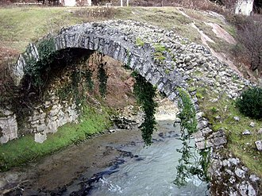

get to know georgia
ქვისთაღოვანი ხიდი, თაღოვანი ხიდი, კამაროვანი ხიდი, თამარის ხიდი — თაღოვანი კონსტრუქციის ქვის ხიდის გავრცელებული ამიერკავკასიის ტერიტორიაზე. მათი ძირითადი ნაწილი გვხვდება ლაზეთსა და ჭოროხის აუზში. ქვისთაღოვანი ხიდები ასევე გვხდება საქართველოს სხვა ადგილებშიც, აფხაზეთში, იმერეთში და სხვაგან. ქვისთაღოვანი ხიდები შეადგენენ ანტიკური და ფეოდალური ხანის მატერიალური კულტურის ძეგლთა საყურადღებო ჯგუფს.
საზოგადოდ, როგორც ამ კონსტრუქციის ხიდების მშენებლობის ეპოქის, ისე მშენებელთა ვინაობის საკითხებზეც სამეცნიერო ლიტერატურაში გამოთქმული აზრი დადასტურებული არ არის. XIX საუკუნის რუსულ პერიოდულ გამოცემებს ისეთი ტენდენცია ჰქონდათ, რომ ლაზეთსა და მეზობელ ტაო-კლარჯეთში დაცული ქვისთაღოვანი ხიდები მაინცდამაინც უცხოელების, კერძოდ ვენეციელების ან გენელების ნახელავი უნდა ყოფილიყო. გაზეთი „ნოვოე ობოზრენიე“, ამ კონსტრუქციის ხიდებს ბიზანტიელთა მიერ აგებულ ხიდებად თვლიდა[1], ხოლო გაზეთი „ჩერნომორსკი ვესტნიკი“ — გენუელთა მიერ აშენებულად[2]. ამ ხიდების მშენებელთა ვინაობის შესახებ ანალოგიურ აზრს ატარებდა გაზეთი „კავკაზიც“[3], ხოლო „კავკაზსკი ვესტნიკი“, 1892 წელს უშუალოდ ჭოროხის შესართავთან არსებული ხიდის შესახებ მიუთითებდა, რომ იგი თითქოსდა გენუელების აგებული იყო[4]. ჩერნომორსკი ვესტნიკი 1899 წელს წერდა, რომ ადიდებულმა ჭოროხმა გაიტაცა რამდენიმე საუკუნის წინათ გენუელტა მიერ აშენებული ქვის ხიდის ბურჯები, რომელთა სიმტკიცე აკვირვებდა მის მნახველ ინჟინრებს. საყურადრებოა რომ ამ გაზეთებში გამოქვეყნებულ სტატიებს თავისი გავლენა დაუტოვია ზოგიერთ ქართველ მიმომხილველზეც. აჭარის მკვიდრი მოსახლეობა აჭარაში არსებულ ხიდებს თამარის მეფობის პერიოდში აშენებულად თვლის.